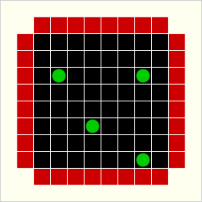
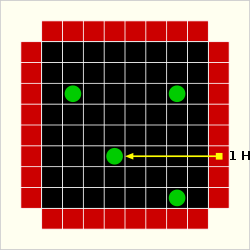
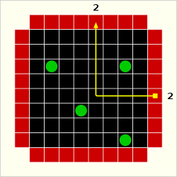
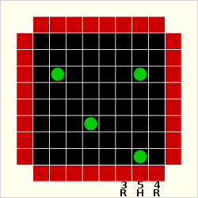
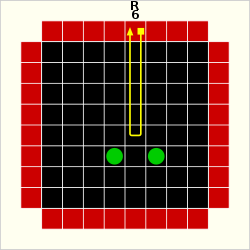
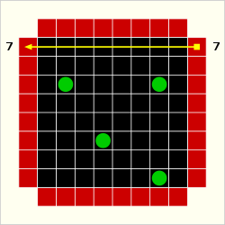
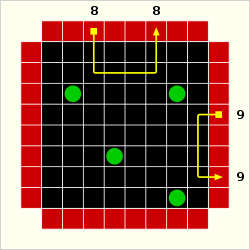

Objective
Black Box is played on a two-dimensional grid. The object of the game is to discover the location of objects ("atoms") hidden within the grid, by the use of the minimum number of probes ("rays"). The atoms are hidden by the computer. The player designates where the ray enters the black box and the computer announces the result (a "hit", a "reflection", or a "detour/miss"). This result is then marked and the player uses these to deduce the position of the atoms in the black box. Below is an example of a game board.

Rules
Atoms interact with rays in three ways. A direct impact on an atom by a ray is a "hit". Thus, ray 1 fired into the box configuration at left strikes an atom directly, generating a "hit", designated by an "H". A ray which hits an atom does not emerge from the box.

The interaction resulting from a ray which does not actually hit an atom, but which passes directly to one side of the ball is called a "deflection". The angle of deflection for this ray/atom interaction is 90 degrees. Ray 2 is deflected by the atom, exiting the box as shown.

The final type of interaction of a ray with an atom is a "reflection", designated by an "R". This occurs in two circumstances. If an atom is at the edge of the grid, any ray which is aimed into the grid directly beside it causes a reflection.
Rays 3 and 4 would each generate a reflection, due to the atom at the edge. Ray 5 would be a hit on the atom.

The other circumstance leading to a reflection is when two deflections cancel out. In the grid, ray 6 results in a reflection due to its interaction with the atoms in the grid.

There are also misses. Ray 7, for instance, interacts with no atoms in the grid.

Rays that don't result in hits or reflections are called "detours". These may be single or multiple deflections, or misses. A detour has an entry and an exit location, while hits and reflections only have an entry location for a hit (indicated by an "H") and a single entry/exit location for a reflection (indicated by an "R"). Detours and misses are indicated by a matching number/color pair at the entry and exit points.
Of course, more complex situations result when these behaviors interact. Ray 8 results in two deflections, as does ray 9.

Scoring
Each entry and exit location counts as a point. Hits and reflections therefore cost one point, while detours cost two points. When the seeker guesses the location of the atoms in the grid, each misidentified atom position costs five points. It is better to get a low score in this game.
Different atom positions lead to different average scores - normally 8-9 for a four-ball game.